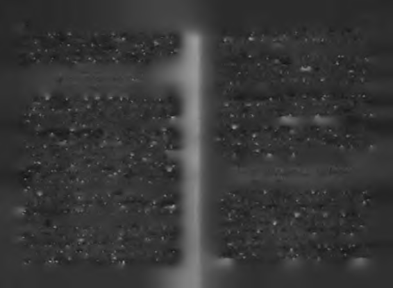

Başarı hayatından biraz büyük hayalleri olmayı gerektirir. Ha
Bu tarz düşünen insanların manük yürütme şekli şöyle-
yatından büyük bir hayali olan herkes, hayal kırıklıkları, endir:
geller, aşağılanmalar ve alay edilmelerle karşılaşır.
Bu kişi beni aşağıladı, aşağılamak beni öfkelendirdi, o halde da
Bazıları, başma gelen kötü şeyden sonra içine kapanır, gi
ha çok başarılı olmalıyım, bir daha yapmayı aklından geçirmemesi
der yorganım başına çeker, uyur. Bazıları kendini yemeğe
için. Bu kişi beni övdü, övülmek hoşuma gitti, o halde daha çok ba
vurur. Saç modeli beğenilmezse, gider daha fazla yemek yer!
şarılı olmalıyım, övgünün sürmesi için. Param yok, o halde uzun
Bazıları söylenmeye vurur kendini. Sürekli başkalarının yap
süre bu durumda kalmamak için daha başarılı olmalıyım. Param
tığı haksızlıkları ve kötülükleri anlatıp kafa ütüler. Bazıları
çok, o halde bu durumun sürmesi, gördüğümden eksik yaşamamam
depresifleşir. Bazıları agresifleşir. Bazıları ise herkese acır ve
için daha başarılı olmalıyım. Başarısızım, o halde bu durumdan
İsa modunda yaşarlar: "Affet onları baba, onlar ne yaptıklarını
kurtulmak için daha başarılı olmalıyım. Başarılıyım, başarılarımı
bilmiyorlar!"
sürdürmek için daha çok başarılı olmalıyım. Sevgilim terk etti, o
Bazıları ise mücadele etmeyi ve zorlukları başarı enerjisi
acıyı unutmak ve onun için unutulmaz biri olmak için daha başa
ne dönüştürmeyi sever. Nietzsche'nin, "Beni öldürmeyen darrılı olmalıyım. Çok güzel bir sevgili buldum, başarı aşka renk katar, be beni güçlendirir," sözü onların zor zaman sloganı, hayat
o halde daha çok başarılı olmalıyım.
mottosudur. Başlarına gelen, iyi ve kötü her şey onların başarısı
Bu örneklerdeki gibi, başınıza gelen her şeyi sizi başarıya
nın itici gücü, katalizörü olur.
itecek şekilde kafanıza yerleştirirseniz, yolun yarısmda sizi
Onlar karşılarından gelen sert dalgaları önce duvarlarında yu
akıl hastanesine kapatmazlarsa, yolun sonunda başarıyı gö
muşatıp sonra da içlerindeki pervanelerde çevirerek ilerleyen gemi
receksiniz!
ler gibidir. Kendilerini geriye itmek için üzerlerine gelen suyu
Şaka b ir yana, pervaneye sarmanın gücünü iyi görmenikullanarak kendilerini ileriye iterler. Engelleyicilerini, destek zi isterim . Bir düşünün, başınıza gelen iyi kötü her şeye verdiği
yapıp üzerinden yürürler.
niz tek karşılık gidip başarılı olmak için bir şeyler yapmak olun
Bu bir yaşam duruşu, hayat felsefesidir. Ben de bu bakış
ca, sizi ne durdurabilir ki? Başınıza gelen her şeyi, içinizden
açısını yıllarca kullandım. Başıma gelen iyi ya da kötü her şeyi,
sizi ileri itecek bir iç motora dönüştürdüğünüzde sizi kim
içimdeki pervaneye sarıp, kendimi ileri iten bir güce dönüştürdüm.
durdurabilir ki? Kendi hareketinden ürettiği enerjiyle çalı
İnsanı sırtı yere getirilemez yaptığına inandığım bir tavırdır
şan bir başarı makinesi olursunuz! Tek yapmanız gereken,
bu. Hangi yönden ve hangi şiddette eserse essin tüm rüzgarları
net bir istikamet belirleyip kendinizi o doğru yönde sürek
kendini ileriye itecek şekilde kavrayabilen bir gemiyi ne durdurabi
li ileri itm ek.
lir ki? Esen en güçlü rüzgarın yönünde gitmekten değil, han
Unutmayın; Esen rüzgarların yönü değil, yelkeninizi tutuş
gi yönden eserse essin tüm rüzgar açılarını kavrayıp kendi yö
şekliniz, başınıza gelen olaylar değil onları kafanızın içinde karşılanünde ilerlemek için enerjiye dönüştürmekten bahsediyorum.

103